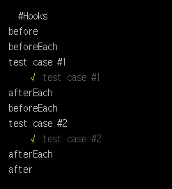

Mocha Tutorial - Step 03. Hooks
이번 Tutorial에서는 Mocha의 Hooks를 알아보겠다. Mocha에서는 테스트들의 전제 조건과 후 조건을 미리 설정할 수 있는 Hooks를 지원한다. Mocha에서는 기본적으로 BDD 스타일을 지원하지만 TDD 스타일도 역시 지원하기 때문에 이 두 스타일에 대한 Hooks도 정의할 수 있다.
먼저 Hooks를 살펴보겠다.
기본 Hooks
Mocha의 기본 BDD 스타일의 Hooks는 다음과 같이 정의할 수 있다.
1 | describe('#Hooks', function(){ |
간단하다!!.
주석을 보면 알겠지만 Mocha에서는 before(), after(), beforeEach(), afterEach() 4가지의 Hooks를 지원한다. 여기서 before(), after()는 테스트 스위트 단위(describe)로 실행된다. before()는 각 테스트 스위트가 실행되기 전에 실행하고 after()는 각 테스트 스위트가 종료되고 실행된다.beforeEach(), afterEach()는 어떨까? 이 두개의 Hooks는 테스트 스위트가 아닌 테스트 케이스 단위(it)로 실행된다. beforeEach()는 각 테스트 케이스가 실행하기 전에 실행되고 afterEach() 반대로 테스트 케이스가 종료 후에 실행된다.
Hooks 실행 순서
이 Hooks들은 적절하게 정의 된 순서대로 실행된다.
모든 before() Hooks가 한 번 실행한 후 모든 beforeEach() Hooks와 테스트 케이스(it)가 실행된다. 이후 모든 afterEach() Hooks를 실행하고 마지막으로 after() Hooks를 한 번 실행하게 된다.
아래 코드를 보자.
1 | describe('#Hooks', function () { |
해당 코드를 실행하게 되면 초기에 before()이 실행이 되고 이후 beforeEach() 그리고 테스트 케이스(it)이 실행된다. 그리고 테스트 케이스(it)이 종료되면 afterEach()가 실행되고 또 다시 테스트 케이스(it)을 위해 반복적으로 beforeEach()와 afterEach()가 실행되며, 마지막으로 after()가 실행되는 것을 볼 수 있다.

Hooks 설명
어떤 Hooks는 특정 설명과 함께 호출 할 수 있으므로 테스트에서 오류를 쉽게 찾아 낼 수 있다. 또한 Hooks에 특정 명칭을 가진 함수가 주어지면 그 명칭을 사용하게 된다.
1 | describe('#Describing Hooks', function () { |
Hooks로 보는 BDD와 TDD
Step 01: Hello World!부터 강조했던 점은 Mocha는 TDD와 BDD 스타일을 각각 지원한다고 하였다. 그 차이가 무엇인지 Hooks를 통해 알아보겠다.
단순히 TDD와 BDD는 코딩의 스타일이 아닌 하나의 애자일 소프트웨어 개발 방법론에서 가장 널리 쓰이는 테스트 방법론이다. TDD는 테스트 주도 개발(Test-Driven-Devenlopment)이며, BDD는 TDD를 근간으로 파생된 행위 주도 개발(Befavior-Driven-Development)이다. 이런 복잡하고 학습 곡선이 긴 내용은 이 Tutorial에서는 넘어가도록 하겠다.
오직 이 Tutorial에서는 다루는 내용은 Mocha에서의 TDD와 BDD스타일 입니다.
우리가 이 Tutorial에서 배운 것은 Mocha는 기본적으로 BDD 스타일을 우선순위로 지원한다고 하였다. 그리고 4가지의 Hooks인 before(), after(), beforeEach(), afterEach() 이다. TDD는 4가지의 Hooks의 명칭이 다릅니다. suiteSetup(), suiteTeardown(), setup(), teardown() 이렇게 된다. 또한 BDD에서의 describe()는 suite()로, it()은 test()로 표현한다.
TDD 스타일을 직접 코드로 살펴보자.
1 | suite('#Hooks', function(){ |
우리가 처음 Hooks를 시작할 때 작성했던 코드와 비교하면 어떤 부분이 다른지 알 수 있다. 그저 관점의 차이라고 볼 수 있겠다. 여기서 중요한 건 코딩의 스타일도 있겠지만 TDD 스타일을 사용하기 위해서는 Mocha의 옵션을 지정을 해줘야 한다.
1 | $ mocha test --ui tdd 또는 -u tdd |
--ui 또는 -u의 옵션을 통해 우리가 Mocha의 어떤 스타일을 사용할 것인지 명시를 해줘야 한다.
Hooks는 용이하게 사용할 수 있다. 예를 들어 테스트 케이스 필요한 Book이라는 객체를 생성한다고 하였을 때 우리는 var book = new Book()을 테스트 케이스마다 만들 것이다. 하지만 우리는 지금까지 배운 Hooks를 통해 한 번에 객체를 만들고 destroy까지 완벽하게 끝낼 수 있다.
이제 Hooks를 배웠으니 다음 Tutorial에서는 비동기 처리에 대한 방법을 배워보고 Hooks에도 비동기 처리를 적용하는 방법을 배워보겠다.